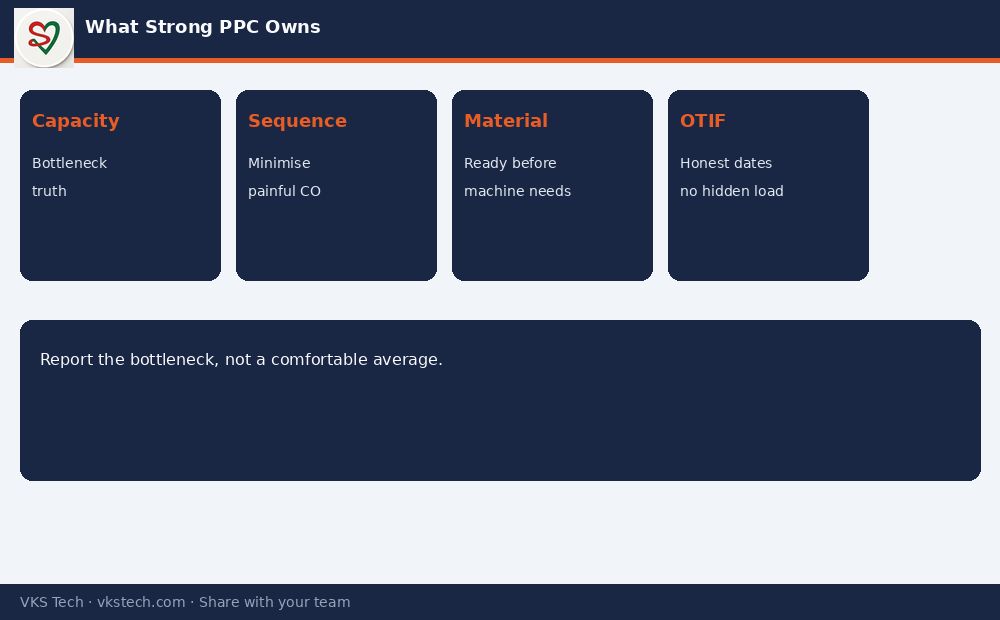

📋 In a Converting Plant, PPC Is Not “Who Makes the Schedule”. It Is Who Protects Capacity, Material and Delivery Promise at the Same Time.
📖 12-min read · Career + Operations · PPC / Planning Heads
This series walked through processes, wastage, efficiency and capacity. The person who must hold all of that together every day is PPC. In converting — with many jobs, many changeovers and tight customer dates — the role is broader than excel sheets.
📌 What Strong PPC Owns
- Realistic capacity (bottleneck process, not brochure total)
- Job sequence that minimises painful changeovers
- Material readiness (film, ink, adhesive, cores, cartons)
- Wastage and efficiency visibility machine-wise
- OTIF — on time in full — without hiding overload

Daily / Weekly Rhythm
- Daily: firm next 24–48 h schedule, material shortfalls, critical changeovers
- Weekly: capacity vs load, wastage by machine, overdue orders, upcoming big jobs
- Monthly: bottleneck trends, efficiency components, improvement actions closed
Questions Worth Asking in Any Converting PPC Role
- What is the real bottleneck process this month?
- Where is changeover time measured vs assumed?
- Is wastage tracked machine-wise or only plant-wise?
- Which three customer dates are at risk if one machine stops for a day?
💡 Career line: “I plan converting capacity the way the plant actually runs — after changeovers, quality loss and material constraints — and I report the bottleneck, not a comfortable average.”
Series complete · Blogs 52–63 · Converting Plant Mastery
📋 कन्वर्टिंग प्लांट में PPC सिर्फ “शेड्यूल बनाने वाला” नहीं है। वह क्षमता, मटेरियल और डिलीवरी वादे को एक साथ बचाता है।
📖 12-मिनट पढ़ें · करियर + ऑपरेशंस · PPC / प्लानिंग हेड
📌 मजबूत PPC क्या संभालता है
- वास्तविक क्षमता (बॉटलनेक)
- चेंजओवर कम करने वाला जॉब क्रम
- मटेरियल तैयारी
- मशीन-वाइज वेस्टेज और एफिशिएंसी
- OTIF — बिना ओवरलोड छुपाए
💡 करियर लाइन: “मैं कन्वर्टिंग क्षमता उसी तरह प्लान करता हूँ जैसे प्लांट वास्तव में चलता है — चेंजओवर, क्वालिटी लॉस और मटेरियल सीमाओं के बाद।”
सीरीज़ पूर्ण · ब्लॉग 52–63